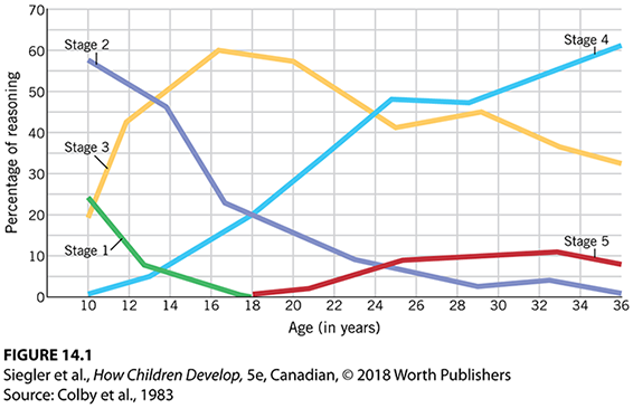

PSYCH 211 Developmental Psychology
Author: Catherine Zhou
Date: January, 2021
Copyright Notice:
This is just a rearranged and edited copy of PSYCH 211 lecture notes. All rights belong to Dr.Sebastian Dys from Department of Psychology, University of Waterloo.
Lecture 1 - Introduction to Developmental Psychology
Why do we study developmental psychology?
Raising, educating children:
- How should parents educate children when they misbehave?
- Can they watch violent movies?
Choosing social policies:
- Can children lie? Absolutely. In legal system, asking leading questions will make them say the things you want them to say.
Understanding human nature
Why is developmental psychology important?
It cuts across many ares (e.g. social, cognitive, emotional, physical)
Many other areas have questions that involve development
The early years are very formative
- Critical periods
- Sensitive periods
Age Categories
Prenatal (before birth)
| Category | Age Range |
|---|---|
| Germinal | Conception - 2 weeks |
| Embryonic | 3-8 weeks |
| Fetal | 9 weeks - birth |
Postnatal (after birth)
| Category | Age Range |
|---|---|
| Infancy | Birth - 24 months |
| Toddlerhood | 1 - 3 years |
| Early childhood | 3 - 5 years |
| Middle childhood | 6 - 8 years (often considered 6 - 11 years) |
| Late childhood | 9 - 11 years |
| Early adolescence | 12 - 14 years (some define it as early as 9 or 10) |
| Middle adolescence | 15 - 17 years |
| Late adolescence | 18 - 20 years (emerging adulthood runs from 18 - 25 years) |
| Young adulthood | 20 - 40 years |
| Middle adulthood | 40 - 65 years |
| Late adulthood | 65+ years |
Historical Perspectives
Both Plato and Aristotle believed that the long-term welfare of society depended on children being raised properly, but they differed in their approaches.
| Plato | Aristotle |
|---|---|
| Children are born with innate knowledge | Knowledge comes from experiences |
| Education should focus on developing self-control and discipline | Education needs to be suited to the individual needs of each child |
John Locke
- Tabula rasa: blank slate ( like Aristotle's perspective)
- Child rearing should build children's character
- Importance of modeling good behaviour
Jean-Jacques Rousseau
- Children should have maximum freedom from early on
- Learning comes from own spontaneous interactions with people and objects
Sigmund Freud
- Psychosexual development theory: child seen as passive
- Biological drives exerted a crucial influence on development: especially sexual drives
John Watson
- Behaviorist theory
- Children's development is dicatated by their environment (conditioning -- humans are no different than other animals in terms of learning)
For Freud and Watson:
Research methods were limited, the theory inspired or drew more sophisicated thinking
- Freud: Erik Erikson, Alfred Adher, Carl Jung
- Watson: B.F.Skinner
Brought attention to the importance of early years
7 Enduring Themes
Nature and Nurture
- Nature: biological endowment, especially the genes we inherit from our parents
- Nurture: environmental forces, both physical and social, that influence our development
- Development results from bidirectional interaction of the two: Epigenetics
You can never separate the two concepts! Study of how environment & behaviours cause changes and how genes work (how nature modulate nurture)
The Active Child
How do children shape their own development?
Even from an early age, children impact their own development through:
- what they attend to
- how and what they communicate
- their play
Later in life, older children and adolscents choose:
- hobbies
- friends
- jobs
Continuous or Discontinuous?
- Does development occur steadily (like tree) or are there discrete stages of growth (like butterfly)?
- There are different stages for people to develop. Psychologists see development more as continuous, but with discontinuity.
- It mostly depends on the attribute you observe. Some might be continuous, some others might not be.
Mechanisms of Change
- The "how" of development
- What components underly development and how they might change development?
e.g. how do genes and experiences influence effortful attention? Experience, poverty, etc.
Sociocultural Context
the physical, social, cultural (most common), economic, and historical circumstances that make up any child's development
How much are psychological effects universal versus situationally-specific? e.g. cross-cultural comparisons
Variation not only between cultures
- Socioeconomic status (SES): measure of social class, includes income, education, occupation
Individual Differences
How do children become so unique?
Four reasons why children from the same family turn out differently:
- genetic differences
- being treated differently
- reacting differently to similar experiences
- choosing different environments
Research and Children Welfare
- What types of practices and policies are helpful for children? Teachers, parents, policy makers.
- What kinds of policies can help reduce the negative effects of coming from low SES backgrounds?
The Scientific Models
Science's approach to testing whether something is true
Untested beliefs are hypotheses, not truth
Tested using scientific processes
Hypotheses must be disprovable
Inferences about variables are limited by sample characteristics and validity of results
We make inferences about A & B, but limited by how we measure A & B.
Scientific Process
Identify research question
Construct Hypothesis (before conduct the study) Collect empirical data Analyze results Accept or reject hypothesis back
CAUTION!!
Supported
We have many assumptions about
- measurements and statistics
- sample representativeness
- how efects translate from lab to "real world"
Best to use more qualified language when referring to a single study
Reliability
Degree to which variable measurement is consistent.
- Interrator reliability
- Test-retest reliability
Validity
Degree to which a measure assesses what it intends to
- Internal validity: can the observed effect (or score) be attributed to the variable?
- External (aka. ecological) validity: generalizable?
Reliability is necessary but insufficient to establish validity.
e.g. is the IQ test "accurate"? can the result generalize to something else?
Replicability
Whether a study's findings can be reproduced, given the same measures and population.
What if a study isn't replicated? Findings may have been
due to chance
culturally-specific
malpractice
- severe
- irresponsible, but not malicious
How does it differ from reliability?
- reliability = consistency in variables
- replicability = consistency in study findings
Approaches to measuring our variables
Interviews
structured interview: fixed set of questions
semi-structured/clinical interviews: prepared set of questions, with freedom flexibility to adjust questions given participant's responses
strengths:
- may elicit a lot of rich information
- can help us understand subjective experiences
weaknesses:
- time consuming
- could elicit social desirable response
- not all interviews with children are socially acceptable
Questionnaires
self-completed set of questions
questions must be esay to complete, often few opportunities for clarification
typically entirely predetermined (i.e., structured)
strengths:
- quick and easy way to gather a lot of data from many people
weaknesses:
- could elicit social desirable response
- doesn't typically provide rich data
- could elicit social desirable response
Observations:
Naturalistic:
examination of ongoing behaviour in an environment not controlled by the researcher
e.g. examining rate of negative behaviours in "troubled" vs "typical" families
strengths: detailed and ecologially valid information
weaknesses: events of interest may not happen often; difficult to disentangle directionality
Structured:
- examination of behaviour in a controlled environment
- strengths: environment is identical for all participants (helps with comparisons accross children)
- weaknesses: may lack external validity; reveals less about subjective experience (in contrast to interviews)
Correlation
Correlational designs examine variabels are related to one another. A correlation is the association between two variables. The direction and strength of a correlation is measured by a statistic called correlation coefficient.
Correlation vs. Causality
Direction-of-causation problem
It is not possible to tell from a correlation which variable is the cause and which is the effect
Third-variable problem
A correlation between two variables may arise from both being influenced by some third variable (some variable that we are not aware of).
Experimental design
Allow inferences about cause and effects & dirrect assumption
Rely on random assignment
each child has an equal chacne of being assigned to any group (experimental or control) within an experiment
Experimental control refers to the ability of the researcher to determine the specific experiences that children have during the course of an experiment
Children in the experimental group receive an experience of interest, the independent variable
Those chosen in the control group do not receive this experience
The dependent variable (outcome variable) is a behaviour that is hypothesized to be affected by the independent variable
Developmental Study Designs
Cross-sectional: study different ages as a proxy for development
Typically used in place of longitudinal designs, but not always
e.g. how does lie-telling change across 3-, 4-, and 5-year-olds?
Strengths:
- you can run the study in a relatively short period of time
- collect a lot of data quickly
Disadvantages
- it is just a proxy for development
- if one sample group is not random, then its comparison with other groups would not be attributable to the conclusion
Longitudinal designs
The same participants are studied twice or more over time
- Pros: you can notice some changes over time
- Cons: very time-comsuming. Participants might not longer want to/could participate.
Microgenetic designs (special case of longitudinal design)
The same participants are recruited many times over a brief period of time
Cross-sequential (or accelerated longitudinal) design
Cross-sectional
Ethical Issues
Children are vulnerable population. We should not harm children, physically or psychologically.
- Experiments in Aboriginal communities and residential schools
- Some research questions are more approporiate for animal models
Before the experiments, we should obtain consent from parents, assent from children (where appropriate)
- willing to participate
- able to withdraw without consequences to themselves
Data should be held confidential (private), anonymous (where possible).
Lecture 2 - Early and Biological Development
Early Development
Periods of Prenatal Development
| Time Period | Name | Description |
|---|---|---|
| Conception to 2 weeks | Germinal | Begins with conception and lasts until the zygote becomes implanted in the uterine wall. Repaid cell division takes place |
| 3 to 8 weeks | Embryonic | Following implantation, major devlopment occurs in all the organs and systems of the body. Development takes pace through the processes of cell division, cell migration, cell differentiation, and cell death, as well as hormonal influences. |
| 9 weeks to birth | Fetal | Continued development of physical structures and repaid growth of the body. Increasing levels of behaviour, sensory experience, and learning. |
Highlights of prenatal period
Zygote during first 2 weeks - essentially immune to environmental influences
Embryo at 4 weeks
- Primitive heart beating anc circulating blood
- arm and leg buds
Embryo at 5
- differentiation begins in nose, mouth, palate
- By 8
Fetus at 9 weeks
- repid brain growth
- all internal organs present
- sexual differentiation starts
Fetus at 11 weeks
- heart achieves basic heart structure
- spine and ribs visible
- major divisions of brain
Fetus at 16 weeks
- growth in lower body accelerates
- movement increases, breathing movements
- external genitalia developed
Fetus at 18 weeks
- covering of fine hair and greasy coating to protect skin
- thumb-sucking visible
Fetus at 20 weeks
- facial expression components present
- weight gain and cramped quarters in amniotic sac
Fetus at 28 weeks
- brain and lung development increases
- eyes can experience REM
- neural activity similar to newborn
- weight tripled
Fetal Behaviours
Sight and touch
minimal visual experience; more tactile experience
Taste
flavours in amniotic fluid, taste sensitibity, and fetal preferences present
Smell
amniotic fluid odorants provide olfactory experiences
Hearing
- Prenatal envrionment rich with sounds
- exernal sounds audible to fetus
- respond to sounds by 6th month
SD's pet peeves - touching pregnant woman's abdomens, don't do that without permission!!
Fetal Learning
At about 30 weeks gestation, the fetus decreases responses to repeated or continued stimulation - simple form of learning called fetal habituation.
Fetus learns, prefers, and remembers mother's voice
Research
- Kisilevsky et al. (2003) - done over 60 getuses (M = 38.4 weeks) of Chinese women. monitor the child's heart rate over no voice
voice (mother/stranger) no voice - Mennella et al. (2001) - food preferences and prenatal learning, done over 46 pregnant mothers, last trimester
Fetal Heart Rate
External cardiotocography
- ultrasound used to measure child's heart rate
- for research puporses, typically used externally
Hazards to Prenatal Development
Sensitive Periods of Prenatal Development

Miscarriage
- occurs in 10-15% of konwn pregnancies
- approximately
- majority of embryos that miscarry very early have severe defects
Environmental influences
teratogens (致畸物) are environmental agents that have the potential to cause harm during prenatal deveopment
most teratogens show a dose-response relation
increases in exposure to potential teratogens (cumulative effect) are associated with greater probabilities of fetal defects and with more severe problems
In Canada, lead (铅) used in many industrial products. Accumulation of evidence of lead's toxity, causing serious poisoning, which even lead to death. The International labour conference meeting in 1921 created proposal to restrict lead content in paint. Canada restricts concentrations of lead in interior paints in 1976. Lead gasoline is banned in Canada for public consumption in 1990.
include both leagal and illegal substances
legal drugs:
- cigarettes - linked to severe cognitive impairments and low birth weight. Cigarette smoking has also been linked to SIDS (sudden infant death syndrome)
- alcohol - most common human teratogen, leading cause of fetal brain injury, most preventable cause. About 10% of pregnant women in USA report drinking alcohol. Maternal alcoholism can lead to fetal alcohol syndrome which is associated with mental retardation, facial deformity, and other problems.
timing is a crucial factor in the severity of the effects of potentially harmful agents
many (but not all) agents cause damage only if exposure occurs during a sensitive period in development
Maternal Factors
The age, nutrition, disease, and emotional state of the mother have an impact on prenatal development
Infants born to girls 15 years younger - mostly likely to die
An inadequate supply of specific nutrients or vitamins
A variety of diseases including sexually transmitted diseases
A woman's emotional state
Depression, anxiety, and stress: prevalence rates
Depression: 5-16%; Anxiety: 10-20%; Stress: low-to-moderate stress = 78%; high stress = 6%
Related to negative outcomes:
- greater chance of preterm births, low birth weights
- greater stress responsibity, feafulness (infancy)
- more impulsivity, poorer attentional control (infancy)
- less grey matter density, more emotional and behavioural problems (childhood)
- more impulsively and behavioural problems (adolescence)
Intergenerational transmission of poverty, trauma, and/or stress
Birthing Process
The Newborn Infant
| Average proportion of time (in 24-hour day) | States of Arousal |
|---|---|
| Quite sleep | 8 hrs |
| Active sleep | 8 hrs |
| Drowsing | 1 hr |
| Alert awake | 2.5 hrs |
| Active awake | 2.5 hrs |
| Crying | 2 hrs |
Sleep
Newborns sleep twice as much as young adults
The pattern of two different sleep states changes dramatically
- REM (rapid eye movement) sleep
- Non-REM sleep
Biology and Behaviour
Nurture and Nature
Genetic and environmental influences
The interplay between genes and experience is very complex
This model of hereditary and environmental influences can help to simplify this interplay
Three elements of the model
- Genotype: genetic material an individual inherits
- Phenotype: observable expression of the genotype, icnluding body characteristics and behaviour
- Environment: every aspect of the individual, and his or her surroundings, other than genes
Five foundamental relations

Epigenetics: e.g. famine and growth, "Biological embedding of early experience"
Caps et al., 2002
Young men who had experienced severe maltreatment (虐待) were in general more likely to engage in antisocial behaviour than those who had experienced none. However, the effect was much stronger for those individuas who had a relatively inactive MAOA gene.
Behaviour Genetics
Behavioural genetics is concerned with how variation in behaviour and development results from the combination of genetic and environmental factors.
Why are people different from one another?
Underlying premise attempts to answe this question:
- Behaviour patterns shoudl run in families.
- Individuals reared together should be more alike than those reared apart.
Behavioural geneticists believe that most traits of interest are multifactorial. Traits are affected by many environmental factors and by many genes.
Research Designs
Family study
Mainstay of modern behaviour-genetics research
Measure trait of interest among people who vary in genetic relatedness
- Monozygotic: ~100% shared genetic makeup
- Dizygotic twins: 50% shared genetic makeup
Identical twins reared apart: twin siblings who have not met since they were infants were studied
- Researchers found similarities in traits like IQ, reaction to stress, and traditionalism.
- These similarities may be influenced by selective plac.ement and similarities in fostering environments, as well as by genetic factors.
Correlations between the measure of the trait in individuals with different relationships
Problems with Behaviour Genetic Studies
Assumptions of equal environments
Are identical twins reared in environments just as similar as non-identical twins or non-twin siblings?
Representative samples?
When there are twins having life really divergent from each other, they are probably not willing to participate in the study.
Heritability estimates don't coverage with genome-wide association studies (GWAS)
It's really about epigenetics (gene
Best to be cautious about heritability estimates
Biological Development
Structure of Brain: The Neuron

Neurogenesis refers to the productions of neurons.
Development Processes
Myelination
- The process of forming the protective layer that coats axons to accelerate communication
- includes fatty sheath of myelin that forms around some axons to increase speed and information-processing abilities
- begins deep in brain befor ebirth and continues into early adulthood
- occurs at differntiated rates throughout brain structures
Synaptogenesis and Synapse Elimination
Synaptogenesis: each neuron forms synapses with thousands of other neurone, resulting in the formation of trillions of connections
Synaptic Pruning
- The extensive generation of neurons and synapses results in an overabundance that must be eliminated.
- Synaptic pruning occurs at differnt times in different areas of the brain and is not fully completed until adolescence.
Synaptogenesis and Synapse Elimination
Mean synaptic density (the number of synapses in a given space) first increases sharply as new synapses are overproduced and later declines gradually as excess synapses are eliminated. Note that the time scale is compressed at later stages (Huttenlocher & Dabholkar, 1997).
Synapse Elimination
Synaptic Pruning
- involves normal developmental process through which synapses that are rarely activated are eliminated
- continues for years after birth
- Synesthesia (联觉) - blending of different types of sensory input
Adolescent development
- The amount of gray matter increases dramatically in adolescence and then begins to decline.
- This scond wave of synapse production and pruning may be linked to the impulsive, irrational behaviour, which is characteristic of adolescence.
The Importance of Experience
Experience plays a central role - Use it or lose it!
Plasticity - capacity of the brain to be affected by experience
Two kinds of plasticity - general/idiosyncratic experiences
Experience-expectant plasticity
Involves process through which the normal wiring of the brain occurs in part as a result of general experiences that every human who inhabits any reasonably normal environment will have.
Developmental impairment results, if expected experience is not available, as in the case of congenital deafness or blindness.
Sensitive periods
Timing is the key element in experience-expectant plasticity.
Few sensitive periods when the human brain is particularly sensitive to particular kinds of external stimuli exists.
Experience-dependent plasticity
Involves process through which neural connections are created and reorganized throughout life as a function of an individual's experience.
Results come from nonhuman animals: animals raised in enriched environment perform better on a variety of learning tasks
Research on humans: Musicians demonstrate highly specific effects of experience on brain structure.
Lecture 3 - Cognitive, Perceptual and Motor Development
Theories of Cognitive Development
Piaget's Theory
This theory is often labeled as constructivist and remains the standard against which all other theories are judged. Piaget believed that nature and nurture interact to yield cognitive development.
3 components of nativist belief:
- Schemas
- Adaptation
- Organization
Three processes work together from birth to propel development forward:
- Assimilation (吸收，同化) - integrating outside information into your schemas
- Accommodation - changing your schemas to fit outside information
- Equilibration - balancing between assimilation and accommodation
Learning Process
Discontinuity
There are distinct, hierachical stages for children's development, and the central properties of Piaget's stage theory is:
- qualitative changes
- broad applicability accross topics and contexts
- brief transitions
- invariant sequences
Children progress through four stages of cognitive development, each building on the previous one.
Piaget's stages of cognitive development
| Stage | Age | Description |
|---|---|---|
| Sensorimotor | Birth - 2 years | Infants konw the world through their senses and through their actions |
| Preoperational | 2 - 7 years | Toddlers and young children acquire the ability to internally represent the world through language and mental imagery |
| Concrete Operational | 7 - 12 years | Children become able to think logically and systematically, not just intuitively |
| Formal Operational | 12+ years | Adolescents can think systematicaly and reason about what might be as well as what is |
Sensorimotor stage
Birth - 2 years.
Over the course of the first two years, infants' sensorimotor intelligence develops tremendously.
- Birth - 1 month: infancts begin to modify the reflexes with which they are born to make them more adaptive
- 1 - 4 month: infants begin to organize separate reflexes into larger behaviours, most of wihch are centered on their won bodies
- 4 - 8 months: infants becoming increasingly interested in the world around them. By the end of this substage object permanence typically emerges
- 8 - 12 months: during this substage, children make the A-not-B error
- 12 - 18 months: infants begin to actively and avidly explore the potential uses to which objects can be put through trial-and-error
- 18 - 24 months: infants become able to form enduring mental representation. The first sign of this capacity is deferred imitation.
Preoperational stage
2 years - 7 years
A mix of impressive cognitive acquisitions and equally impressive limitations
- Symbolic representation: the process of mentally representing objects and experiences through the use of symbols (including linguistic symbols)
- Egocentrism: the tendency to perceive the situation from one’s own perspective, believing that others see things from the same point of view as oneself and that events will elicit the same thoughts, feelings, and behavior in others as in oneself.
- Centration: the tendency of children to attend to one aspect of a problem, object, or situation at a time, to the exclusion of others
- Conservation concept: the awareness that physical quantities do not change in amount when they are altered in appearance. Children become capable of this mental operation in the concrete operational stage
Three-mountain task: investigate egocentrism in children's thinking, and identify the child being in preoperational or concrete operational stage
- The child who is seated at a table where a model of three mountains is presented in front. The mountains were of different sizes, and they had different identifiers (one mountain had snow; one had a red cross on top; one had a hut on top).
- The child was allowed to do a 360 surveillance of the model. Upon having a good look at the model, a doll is placed at different vantage points relative to the child, and the child is shown 10 photographs. The child is to select which of the 10 photographs best reflects the doll's view.
- Children of different ages were tested using this task to determine the age at which children begin to decenter, or take the perspective of others.
Concrete Operations stage
7 - 12 years
Children begin to reason logically about the world. They can solve conservation problems, but think systematically remains difficult.
Formal Operations stage
12 years+
Cognitive development culminates in the ability to think abstractly. Inidividuals can imagine alternative worlds and reason systematically (similar to counter-factual reasoning)
Unlike other stages, Piaget didn't believe this was universally attained.
Children's distinctive ways of thinking at different stages need to be considered during education.
Limitations
Although Piaget's theory remains highly influential, some weaknesses are now apparent.
- unclear about mechanisms
- infants and children are more advanced than Piaget thought
- understates social impacts on cognitive development
- children's thinking isn't as consistent as Piaget believed
Piaget's Legacy
Piaget's theory is regarded as one of the major theories in developmental psychology because
- insights into learning at different ages - implications for educating children
- spans various topics - understanding of number; memory; problem-solving
- cover development from birth through adolescence
- describes the interaction between nature and nurture
Socialcultural approaches
Much cognitive development occurs within social interactions with guided participation and intersubjectivity (the sharing of subjective experience between two or more people).
Lev Vygostsky (1896-1934)
Scaffolding (social scaffolding) - a teaching style that supports and facilitates the student as he or she learns a new skill or concept, with the ultimate goal of the student becoming self-reliant.
In practice, it involves teaching material just beyond the level at which the student could learn alone.
Zone of proximal development - the learning one can accomplish with the help of another who has more knowledge on the subjective, but could not be accomplished alone.
Vygotsky asserted that what children can do with the assistance of others is even more indicative of their developmental status than what they can do alone.
Vygotsky vs. Piaget
| Category | Piaget | Vygotsky |
|---|---|---|
| Independence | emphasized children's efforts to understand the world on their own | emphasized the role of social influences on children's learning |
| Continuity vs. Discontinuity | emphasized discontinuous stages | emphasized gradual learning |
| Goal of learning | children want to master concepts across all times and places | children intent on activities and concepts specific to their time, place, and culture |
Dynamic systems theories
This emphasizes how varied aspects of the children function as a single, integrated whole to produce behaviour, how action and cognition are linked. How purpose would problem solving address if we couldn't act upon those solutions?
How changes in actions over time in physical and biological systems. Unlike other theories, DST sees change as dynamic. Skills related to one subsystem depend on those in other systems. Development functions as an organized system.
Changes occur through two mechanisms:
- variation - using different behaviours to accomplish the same goal
- selection - increasingly using those behaviours that are successful, decreasingly using those that are not
How are these decided? Relative success/ efficiency/ novelty
Perception and Motor Development
Sensation: processing basic information from one's environment via the sense or organs
Perception: the process of organizing and interpreting sensory information
Vision
Visual acuity: degree of visual discrimination
Preferential-looking paradigm
- babies will look longer at objects they prefer
- longer looking at one = distinguishable, preferable
1st month:
- children appear not to perceive distinguish white and colour - cone cells are undeveloped
- vision is 20/120 - almost adult-like by 8 months
Depth Perception
How do we perceive depth?
Optical expansion: present from about 6-7 months
Binocular disparity: process of combining differing visual inputs to perceive depth
8 months, could be sooner. Heart-rates increase when looking over cliff by 3 months
Other reflexes
- grasping
- rooting
- sucking (and swallowing)
- tonic neck reflex
Lecture 4 - Linguistic and Conceptual Development
Linguistic Development
Language: the use of symbols to communciate our thoughts, involving comprehension and production.
Components of language
Generativity
Phonemes - smallest unit of meaning sound. English sues 45/200
Children experience phonological development
Morphemes - the smallest units of meaning. Alone or in combination, they form words。
Children experience semantic development
Syntax - rules governing how words can be combined
Children experience synatctic development
Pragmatics - how to understand and communicate meaning beyond words or structure
Children experience pragmatic development
Are language species-specific or not? - Nativist or Empiricist
How do we learn language? Can other animals learn it? Is it all based on experience or is there an element that you have to born with?
B.F.Skinner, like Watson, believed that language was acquired through experience alone. More specifically, through reinforcement and punishment. Children were a blank state.
Noam Chomsky thinks that children can't be conditioned to learn every proper sentence due to the generativity of the language. He believed that human can be born with language acquisition device and universal grammar.
It is not all nature, but that almost certainly plays an important part.
What's needed to learn language and Who is it for?
Language is species-specific and species-universal. Language primarily represented in the left hemisphere in a human brain.
- Broca's area - a region in the frontal lobe of the dominant hemisphere, usually the left, of the brain with functions linked to speech production.
- Auditory cortex - processes auditory information in humans and many other vertebrates.
- Wenicke's area - region of the brain that contains motor neurons involved in the comprehension of speech.
Sensitive or Critical Period for Language?
We are sensitive in a specific period of time to learn languages. We can still do it later on (but more difficult).
For second or third language, sensitive period exists. It is much easier to acquire during age 5 and puberty. Is billingual good for kids? It seems like children learn each language relatively independent of each other. There are subsential cognitive benefits to learning multiple languages.
Since language is species-universal. Everyone will learn at least one language sometime in their lifetime.
Based on Genie, there is possibly a critical period, but we can't defnitely say yes. There are too many potential "third variables"/factors affecting this ability. Other research has since built a stronger case.
Cases of brain damage among children vs. Adults (more likely to suffer permanent language impariments after severe brain damage than children). Childhood is important to develop languistic abilities.
Also, exposure to ASL in childhood has a much easier time learning ASL (other than spoken language) than those who had no exposure in childhood.
Infant-Directed speech
IDS is the distinctive mode of speech that adults adopt when talking to babies and very young children. Infants prefer and learn faster with IDS.
- It may draws attention to the speech itself
- Infants may be more receptive to the positive tone
- It may help with recognition
Speech Production
Coo - vowel-like sounds produced by young infants when they are seemingly happy and contented. Begins around 6-8 weeks
Babbling - prespeech sounds, such as dadada, made by infants from around 6-10 months of age. Babbling is usually regarded as practice in vocalization, which facilitates later speech development. Limited sounds, not always from native language.
First words - between 10-15 months. Tend to be "Daddy" or "Mommy"
- Holophrasic period: children use one word at a time when speaking
- Overextension: the tendency of very young children to extend the use of a word beyond the scope of its specific meaning, such as by referring to all animals as “doggie.”
Word Learning
Conversations with parents promote development. Children extract meaning from context.
- fast mapping
- pragmatic cues
- syntactic bootstrapping
Children begin putting simple sentences together by the end of 2nd year. It starts with 2-word utterances, or telegraphic speech (children use two words at a time when speaking).
Children apply some general rules (Grammar) intuitively.
- Overregularization - a transient error in linguistic development in which the child attempts to make language more regular than it actually is. An example is saying breaked instead of broken.
Conceptual Development
Concepts - general ideas that organize on the basis of similarity
Naive Psychology
A working understanding of ourselves and other people. A process of reasoning or intuiting by which laypersons determine whether another person (an “actor”) caused a certain action.
Desires
Beliefs
Actions
These begin to form early on and are important for social relationships.
Theory of Mind
An understanding of how mental processes impact behaviour. The understanding that others have intentions, desires, beliefs, perceptions, and emotions different from one’s own and that such intentions, desires, and so forth affect people’s actions and behaviors.
thinking about: desires, beliefs, and intentions impact actions
connection between desires and actions
- emerges around 12 months
- well established by 2 years
conenction between beliefs and actions
- False-belief test: children must infer that another person does not possess knowledge that they possess.
- 4-5 years of age
Intentions and actions
- appears to emerge around 8
How does ToM develop?
A lot of debate and disagreement, but probably:
- brain maturation - through brain imaging studies
- social interactions - sibling studies
- information processing abilities - correlated with inhibitory control
Imaginary Playmates
This is fairly common (63% prevalence)
What are the friends like?
- typically ordinary, just invisible
- Child have complaints against them
What's the purpose?
- Companionship
- Entertainment
- They can help managing emotions - deflect blame, provide comfort, simulate a listening ear
Are these children different?
Mostly, no. Not different in
- personality
- itelligence
- creativity
Among the few differences:
- first-born or only child
- watch less television
- verbally skilled
- advanced ToM
Lecture 5 - Writing for Psychology: A Primer on Style
Purpose of Scientific Writing
Goal of writing should be
- To communicate Ideas: describe a enw study or theory, summarize or integrate a set of studies or ideas, explain science to a lay audience, etc.
It shouldn't be
- To sound or feel "smart"
- To cover up gaps in our own ideas
For example,
The measure involved children's observation of relaxing aquatic scenery for 120 seconds.
Tip 1: Use fewer nominalizations
Nominalization: nouns derived from verbs or adjectives.
| Verb | Nominalization | Adjective | Nominalization |
|---|---|---|---|
| expect | expectation | precise | precision |
| perform | perfomance | clear | clarity |
| evaluate | evaluation | significant | significance |
| integrate | integration | different | difference |
Often end in -tion, -ment, -ence, and -ness.
- reduce
- improve
- develop
The practice of mindfulness appears to lead to a reduction in symptoms of depression.
remove nominalizations: practice, reductions, depression
Remove passive voice may require you to add characters (e.g. children, people, psychologists, parents) to a sentence.
Given the inability to recognize object permanence, the movement of objects back into sight often leads to surprised reactions.
e.g.
The demonstration of contextual influence on visual perception is the primary contribution of this study.
Nominalization: demonstration, perception, contribution
Tip 2: Use less passive voice
Active voice: subject performs the action
Passive voice: the subject receives the action
This finding was discovered by a team of scientists at UofT.
Anxiety over separation from parents is experienced by insecurely attached children.
Remove passive
Remove nominalization
The expectation of negative outcomes from interactions with new peers is often experienced by children who are shy.
Writing Concisely
I would hav ethe same conversation with her for months on end, and although it was repetitive to me, I made sure to listen attentively each time.
Tip 3: Avoid needless words
Be economical with your words: if you can convey the same idea with fewer words, do it.
Replace phrases with words:
| Phrase | Word |
|---|---|
| a large percentage of | most |
| as a consequence of | because |
| at that point in time | then |
| at the present time | now |
| due to the fact that | because |
| in close proximity to | near |
| in some cases | sometimes |
| in the near future | soon |
| in the situation where | when |
| subsequent to | after |
| with the exception of | except |
There are a number of theories that have been stated which try to explain why humans have a tendency to believe they are able to detect lies and deception in others.
After cutting needless words
After removing normalization
e.g.
It has been proposed that one possible explanation is that acts of aggression may be driven by feelings of anger.
Avoiding needless words
Removing passive voice
After adding a subject
Tip 4: Keep introductory clauses short
Good sentences get to the subject quickly. Introductory clauses are best kept to 5 or 6 words.
Although older children are skeptical of people who have misled them previously, preschool children generally trust others.
Two options:
Reduce the clause:
Unlike older children, preschool children generally trust people who have misled them previously.
Move it to the end of a sentence:
Because past research has been unable to determine whether a positive family life is beneficial in the long term, we investigated this issue longitudinally.
We investigated this issue longitudinally because past research has been unable to determine whether a positive family life is beneficial in the long term.
e.g.
Because bilingual children have extensive experience selecting one language for production and inhibiting another, their congnitive control surpasses that of monolingual children.
Tip 5: Use paragraphs properly
A paragraph should speak to one idea. Sometimes it hurts to cut great ideas.
Sequence:
- topic sentence
- supporting information
- concluding sentence
Length for academic writing: about 5 to 7 sentences, writing well involves imposing structure on your ideas.
Writing an introduction
Typically 1 paragraph (sometimes, but rarely 2).
What NOT to do:
- jump right into your topic, e.g. "A study about children's music training showed that..."
- start with an introduction that doesn't interest the reader, e.g. "In recent dacades, psychologists have become more interested in how..."
Tip 6: Write a strong hook
What to do: start with a "hook"
- example situation (story or historical event) of interest: story of wrongful conviction
- rhetorical question, e.g. "Why do some children feel good for violating moral norms, while other children feel bad?"
- interesting statistic or fact, e.g. "Less than 10% of the world's population reads English, yet most research on reading has involved English-speaking readers."
How to apply the tips?
- Put together an outline
- Write a draft, don't overthink it, don't wait for "inspiration"
- revise, revise, revise
- These are tips, they are not always necessary or better.
Lecture 6 - Intelligence
Definition
Intelligence is a single trait with a few basic abilities and numerous processes. Research in this area raises much controversy.
- the roles of heredity and environment
- the influence of ethnic and racial differences
- the effects of wealth and poverty
- the possibility of improvement
Intelligence as a single trait
Charles Spearman believed that General intelligence includes quantitative reasoning, fluid reasoning, visual-spatial processing, knowledge, working memory, etc.
Mesurements of G are:
- school achievement
- information-processing speed
- speed of neural transmission (in brain)
- knowledge of subjects not studied in school
James Cattel thinks there are two types of intelligence:
| Crystallized intelligence | Fluid Intelligence |
|---|---|
| Factural knowledge about the world | Ability to draw inferences and understanding relations between new concepts |
| Increases with age (the more experience and exposure to facts, it increases) | Declines after early adulthood |
The measures of the same type of intelligence will correlate higher with each other than with the ones of the other type of intelligence.
Intelligence as many capacities
Intelligence is many distinct processes: remembering, perceiving, attending, comprehending, encoding, associating, generalizing, planning, reasoning, etc.
Offers more specificity, less simplicity.
John Carroll developed Three-stratum theory of Intelligence:
General Intelligence influence several intermediate level abilities, which influences some specific processes:
Fluid Intelligence
- sequential reasoning
- induction
- quantitative reasoning
Crystallized intelligence
- printed language
- language comprehension
- vocabulary knowledge
General memory and learning
- memory span
- associative memory
Broad visual perception
- visualization
- spatial relations
- closure speed
Broad auditory perception
- speed sound discrimination
- general sound discrimination
Broad retrieval ability
- creativity
- ideational fluency
- naming facility
Broad cognitive speediness
- rate of test taking
- numerical facility
- perceptual speed
Processing speed
- simple reaction time
- choice reaction time
- semantic processing speed
This seems the best theory that account for all different sub-types we rely on.
Measuring Intelligence
Should we have intelligence tests?
No?
- Today's tests are far too narrow,
- distilling intelligence to a single number is irresponsible
Yes?
- Strong predictor of important outcomes
- important for making decisions regarding special education
The contents of Intelligence Tests
Measures of intelligence must be based on observable behaviours:
- Modern intelligence tests examine a variety of types of intelligence
Intelligence tests measure different abilities in children of different ages:
- They have their greatest success and vildest application with children at least 5-6 years old.
Wechsler Intelligence Scale for 6-year-old (and older) children (WISC-V): consistent with Carroll's three-stratum framework, and yields overall score and separate scores on:
- verbal comprehension
- perceptual reasoning
- working memory
- processing speed
Intelligence Quotient (IQ)
The overall quantitative measure of people's intelligence given your age. IQs at different ages are easy to compare. IQ scores for large, representative groups of children of a given age fall into a normal distribution with 100 as mean.
Does IQ change with age?
Appears quite stable, but not identical.
From 5 to 15 years:
Higher correlations between shorter periods.
Correlations appear to strength from year-to-year with age
- 4 to 5 years:
- 5 to 6 years:
- 6 to 7 years:
- 4 to 5 years:
Vary as a function of environmental changes
IQ is a strong predictor of academic, economic, and occupational success.
IQ scores as a predictors of important outcomes
A child's IQ is more closely related to their later occupational success than its socioeconomic status, school attended, or any other variable that has been studied.
IQ is not the only predictor of success
Theories of intelligence
- Malleable or fixed
self-discipline
self-efficiency in self-discipline with learning
"practical intelligence"
Factors and Development of Intelligence
Genes
Children are partially influenced by their genotype. Sandra Scarr (1992) believes that
- passive effects of the genotype arises because of the overlap between parents' and children's genes.
- evocative effects emerge through children's eliciting or influencing other people's behaviour.
- active effects involve children's choosing environments they enjoy.
Environment
Stimulating home environments, especially those in which adults and children undertake challenging tasks together, are associated with higer IQ scores and high achievements in school.
Attending school makes children smarter.
Is it helpful to start kindergarten later? - "Relative age effect"
Redshirting: delay the start of formal schooling for (a child) by one year, typically so as to avoid a situation in which the child is among the youngest in their class.
Is it helpful to hold children back a grade if they're struggling?
Society
Intellectual development is also influenced by the broader economy and society.
Flynn effect:
IQ scores in many countries have consistently increased.
Gene pool has not increased appreciably; IQ scores increase must be due to societal changes.
Explanation for change:
- Improvement in low-income families involving better nutrition, health care, and access to education.
- Increased societal emphasis on abstract problem solving and reasoning.
Poverty
How adequate is the family's income is related to children's IQ? The more years children spend in poverty, the lower their IQs tend to be. Poverty can exert negative effects in numerous ways:
- through nutrition, health care, intellectual stimulation, and emotional support.
Race, Ethnicity, and Intelligence
The average IQ scores of children of different racial and ethnic groups differ.
Statements about group differences refer to group averages rather than to any individual's score.
Differences in IQ scores are tied to their environments. These findings do not indicate children's intellectual potential.
With decrease in discrimination and poverty, African-American children school children decrease the gap with European-American children between 1972 and 2002.
Several contemporary theorists have argued that many important aspects of intelligence are not measured by IQ.
Gardner: Multiple intelligence theory
People possesses at least 8 types of intelligence.
Type Description Examples Linguistic Sensitivity to the meanings and sounds of words; mastery of syntax; appreciation of the ways language can be used poet, politician, teacher Logical-mathematical Understanding of objects and symbols, of the actions that can be performed on them and of the relations between these actions; ability for abstraction; ability to identify problems and seek explanations mathematician, scientist Spatial Capacity to perceive the visual world accurately, to perform transformations upon perceptions and to recreate aspects of visual experience in the absence of physical stimuli; sensitivity to tension, balance, and composition; ability to detect similar patterns Artist, engineer, chess master Musical Sensitivity to individual tones and phrases of music; an understanding of ways to combine tones and phrases into larger musical rhythms and structures; awareness of emotional aspects of music musician, composer Naturalistic Sensitivity/understanding of plants, animals, and other aspects of nature Biologist Bodily-kinesthetic Use of one's body in highly skilled ways for expressive or goal-directed purposes dancer, athlete, actor Intrapersonal Access to one's own feeling life; ability to draw on one's emotions to guide and understand one's behaviour Novelist, therapist Interpersonal Ability to notice and make distinctions among the moods, temperaments, motivations, and intentions of other people and to act on this knowledge leader, parent, teacher, therapist Sternberg: Theory of successful intelligence
Based on the view that intelligence is the ability to achieve success in life within one's sociaocultural context. Allows wider range of talented people.
Success depends on three types of abilities:
- analytic (e.g. linguistic, mathematical, etc)
- practical (e.g. everyday problem)
- creative (e.g. innovation to adapt novel situations)
Lecture 7 - Social Development
Theories of Social Development
Attempts to account for important aspects of development, including emotion, personality, attachment, self, peer relationships, morality, and gender.
Psychoanalytic
Freud's Psychosexual Theory
Freud believed that many of his patients’ emotional problems originated in their early childhood relationships. “Psychosexual” because he believed that even young children have a sexual nature that motives their behaviour.
Basic feature of Freud's Theory:
Freud’s theory posits a series of universal developmental stages in which psychic energy becomes focused in different erogenous zones.
Freud's personality structure:
- Id
- Ego
- Superego - emerged in the pre-school year
| Stage | Description |
|---|---|
| Oral (first year) | Theprimary source of satisfaction and pleasure is oral activity. During this stage, the mother is established as the strongest love-object. |
| Anal (1-3 years) | The primary source of pleasure comes from defecation. |
| Phallic (3-6 years) | Characterized by the localization of pleasure in the genitalia. |
| Latency (6-12 years) | Characterized by the cahnneling of sexual energy into socially acceptable activities. |
| Genital (12+ years) | Sexual maturation is complete and sexual intercourse becomes a major goal. |
Erikson's Psychosocial Theory
Accepted basic tenants of Freud’s theory, but emphasized the role of social factors, emphasized development over the lifespan (birth to late life).
| Stage | Description |
|---|---|
| Trust vs. Mistruct (first year) | Developing trust in other people is the crucial issue. |
| Autonomy vs. shame and doubt (1-3 | The challenge is to achieve a strong sense of autonomy while adjusting to increased social demands. |
| Initiative vs. Guit (4-6 years) | Resolved when the child develops high standards and the initiative to meet them without being crushed by worry about not being able to measure up. |
| Industry vs. inferiority (6-puberty) | Crucial for ego development. The child must master cognitive and social skills, learn to work industriously, and play well with others. |
| Identity vs. Role confusion (adolescence) | Adolescents must resolve the question of who they really are or live in confusion about what roles they should play as adults. |
| Intimacy vs. Isolation (early adulthood) | Attempt to form affectionate relationship(s), typically romantic relationships |
| Generativity vs. stagnation (middle adulthood) | Adults attemp to keep contributing to the world through work, child-rearing, or other productive work. |
| Integrity vs. Despair (late life) | Elderly need to decide whether they are satisfied with how they lived their lives. |
Learning Theory
This type of theories tie to the Mechanisms of Change among the seven enduring themes. Most believed that learning stayed the same across the life spam - overwhelmingly state that development is continuous.
Watson's behaviourism
John Watson believed that child's environment determines the child's development, and this could happen through conditioning.
Classical conditioning
Little Albert (fear of white rabbit)
Parents solely responsible for raising children. He argued for
- feeding schedule
- distance and objectivity (parent should keep distance and not showing affection to children)
He believed that if he could have full control over a child's life, he could raise the child to be any type of person he wanted him/her to be.
Gradually fell out of favour
Because people realize that there is indeed a role for love and the connection with children, beyond simply shaping their behaviour. Classical conditioning cannot determine this.
B.F. Skinner’s Operant Conditioning
Development is determined by child's environment
through (operant) conditioning:
- reinforcement (encouragement of the behaviours),
- punishment (discouragement).
giving attention can be reinforcement
- Time-out
behaviour modification
- e.g. socially withdrawn child (the teacher should reinforce when the child interact with other children)
- punishment doesn't work well as how we expecetd - it only tells what you shouldn't do, not what you should do.
Bandura’s Social Learning Theory
This emphasizes observation and imitation as the primary mechanisms of development.
Preschool children can acquire new behaviours through observing others.
Bobo doll experiment: preschool children initially watched a short film which an adult model performed highly aggressive actions on an inflatable Bobo doll. Childen who have observed being aggressive to the bobo doll picked up the behaviour, while others who have not been exposed behave less aggressive.
Can children learn through vicarious reinforcement?
In the study, the actor was either (independent variables):
- rewarded
- punished
- saw no consequences
Children were then left alone with the doll. The researchers counted the number of aggressive behaviours reproduced (dependent variable).
Children then given a reward to recreate as many aggressive behaviours as they saw. The researchers counted the number of aggressive behaviours reproduced (dependent variable).
Reciprocal Derterminism
Environments can impact children, and children can also impact the environment.
e.g. Child enjoys playing violent video games and encourages peers to begin playing violent games together. Then interacting with peers, child plays violent games more and more often, and more children would adopt this aggressive behaviour, since more and more of them start playing the violent games.
Social Cognitive Theories
Selman’s Stage Theory of Role Taking (optional)
Role taking: thinking from another’s perspective.
Children's social cognition is limited by their role taking. Before 6, children virtually unaware of other’s perspectives
Dodge’s Social Information Processing Theory
This focuses on children's aggressive behaviours. Behaviour related to how people process social environment. Hostiale attribute bias:
- Tendency to interact other people's ambiguous behaviours as antagonistic.
- It has lasting cyclical effects: interpret hostility
- origins? eg. children who are abused at home (sensitive to abusive expression)
- how to intervere? prompt these children to think about other reasons for the "hostile behaviour" they believed.
Dweck’s Theory of Self-Attributions and Achievement Motivation
Achievement motivations: learning or performance goals.
Types of attributes:
- Incremental/mastery orientation (think: malleable) - success is attributable to one's efforts
- Entity/helpless orientation (think: fixed) - success is attributable to one's inheritance/genetic advantage
- (incremental vs. entity theories of intelligence)
How to capitalize on this? - Children who are praised to be smart struggled relatively more when given a simpler test than those who are praised for their efforts. Focus more priase on children's efforts.
Impact beyond academics?
Ecological Theories
Lorenz and Imprinting
Ethological theory.
Imprinting:
- Learning in which newborns of some species attach to their adult members
- Experience-expectatn process
Bowlby's attachment theory
Bronfenbrenner’s Bioecological Model
Mircosystem
Environmental Influences on Children's social development
Children and Media
Is watching television good or alright for children?
American Academy of Pediatrics and Canadian Pediatric Society suggests that
children less than 2 years should watch no TV.
Average TV viewing time for 1-year-olds is 2.2 hours per day.
Amount of TV viewing at age 1 is negatively related to attention span, language acquisition.
children 2-5 years should watch no more than 1 hours/day
On average, spend 4.6 hours/day
children 6-16 years old should watch no more than 2 hours/day
On average, 6-to-11-year old spend 4 hours/day
What about "background television"? - It undermines the quality between children and parent interaction.
Difference between Types of Programs
Slow-paced television shows (e.g. Sesame Street and Blue's Clues)
Goals to promote thinking skills, characterized by
- few scene changes, clear transitions
- repetition, focus on education
- audience participation
Seaseme Street related to better school readiness, particularly for low SES children.
Blue's Clues related to better problem solving, story comprehension, and pattern recognition in children.
Fast-paced shows (e.g. SpongeBob)
focus on entertainment, not education
Violent Media
Does it increase aggression? - yes, but how much?
Battle of the meta-analysis
- small to medium?
- small and insignificant?
Most recent, less controversial meta-analysis:
- used longitudinal studies, lag = ~1 year
- effect still small, but meaningful
How might violent media promote violent behaviour, or what moderates this effect? - increasing aggressive thoughts.
Social Media
95+% of adolescents have and maintain access to social media.
Benefits
- perceived increases in social capital
- opportunities for personal disclosure
- greater feelings of connectedness to friends
Costs
- unwelcome interactions
- increase in depressive symptoms, particularly when night time use reduces sleep
- worse self-esteem, body image - clearest among those who already seek others' approval and reassurance.
Peer and Peer Relationships
Peers are people of approximately the same age and status. Most children have at least 1 same-sex peer they consider a friend. Friend are people who like to spend time together.
- involve reciprocity
- benefit in comparable ways
How do children and adolescents decide on friends?
Children want to be friends with peers who are
- proximal
- sociable
- prosocial
- similar (or same) age, cognitive maturity, cooperation, acceptance by peers, shyness, genger, ethic group (varies substantially)
Early peer interations
Children appear to have friends as early as age 2. Some preferences visible by 12-18 months.
Play becomes more complex and interactive:
- more imitation, cooperation, role trading
- continues to increase through toddlerhood and preschool years
More conflict with friends and non-friends:
- more likely to constructively and fairly resolve conflicts with friends
- more communication and reflection
Functions of Friendships
- Friends can provide a source of emotional support and security
- The support of friends can be particularly important during difficult transition periods
- Friendships may also serve as a buffer against unpleasant experiences.
Support and Validation
- Adolescents report that friends are more important confidants and providers of support than are parents
- In highly stressful situations, however, support from adults may be more important

Possible cost of Friendships
In elementary school, children who have antisocial and aggressive friends tend to exhibit aggressive tendencies themselves. Co-rumination may lead to developing depressive or anxious symptoms.
Development changes: Childhood Friendships
From 5 years of age, distinctions between friends and non-friends sharpen, especially in the degree and importance of intimacy.
6- to 8-year-olds define friendship on basis of joint activities.
Between early school years and adolescence: friendship based on mutual liking and share interests
- Young children put more weight on “having fun”
- Older children put more weight on similar attitudes, helpfulness, loyalty
Adolescents use friendship as a context for self-exploration and working out personal problems.
Development changes: Adolescent Friendships
They see friendships as context for self-exploration and working out problems. Value intimacy, disclosure, honesty
Friendships become
- More exclusive
- More intimate
- Less stable
Cliques and Social Networks in Middle Childhood and Early Adolescence
Cliques are friendship groups that children voluntarily form or join themselves.
Members are bound by their similarities begin in middle childhood, typically around 3-10.
It provides a sense of belonging, and membership is fairly unstable.
From ages 11 to 18, more adolescents develop ties to cliques making them more stable. It has more cross-gender members
During early and middle adolescence, children strongly value being in a popular group and in conforming to the group’s norms. It declines in later adolescence.
Emergence of crowds
- Large groups of adolescents who have similar reputations
- May channel adolescents to interact with some
Lecture 8 - Self-Concept
The Self
Self-concept isthe conceptual system made up of one's thoughts and attitudes about oneself. Sense of self emerges early years of life, continues developing into adulthood. Environment contribute to the child's self-image.
In Infancy
- The first months of life: infancts have a rudimentary sense of self.
- About 8 months of age: their sense of self becomes more distinct
- By 18 to 20 months of age: many children can look into a mirror and realize that the image they see there is themselves.
- Two years of age: displays of self-conscious emotions, self-assertive behaviour, and even use of language also indicate self-awareness.
In childhood
Self is largely socially constructed based on observations by others . Influence of attachment and parenting.
At age 3 to 4, children understand themselves in terms of concrete, observable characteristics.
Start off unrealistically confident.
In elementary school, self becomes more differntiated due to social comparisons.
In adolescence
More self-generated.
The ability to use abstract thinking allows adolescents to think of themselves in terms of abstract characteristics. "Extravert" based on their talkativeness and cheerfulness.
Egocentrism
- personal fables: differntiating their thoughts and feelings from those of others, feeling they are unique and special
- imaginary audience: belief that excessive attention is paid to the self.
Adolescents often begin to agonize over the contradictions in their behaviour and characteristics.
Self-Esteem
Self esteem is a person's overall subjective evaluation of their worth and the feelings they have about that evaluation.
high self-esteem = more hopeful, agentic
low self-esteem = feel worthless, hopeless
- related to aggression, depression, substance abuse, social withdrawl, suicidal ideation
- longitudinally related to problems in adulthood: mental health problems, substance abuse, weak economic prospects, low relationships satisfaction
Variations in self-esteem
- Age: highest in childhood, drops in adolescents, rebounds in adulthood.
- Physical attributes: attractiveness
- Approval they receive from others: parents, peers (increasingly important)
- Gender: boys typically higher than girls
Praise
Although many adults think giving everyone a medal for participation is good for self-esteem, research suggests otherwise.
Brummelman et al.study on inflated praiseAdults gave more inflated praise to a child with low self-esteem
Children tried to recreate a difficult painting
From "professional painter" received either
- inflated praise "you made an incredibly beautiful drawing"
- regular praise "you made a beautiful drawing"
- no prsise
then given opportunity to recreate an easy or difficult picture
Inflated praise had
- negative effects on children with low self-esteem
- positive effects on children with high self-esteem
Identity
A definition of the self, often externally imposed
James Marcia:
| Exploration | No Exploration | |
|---|---|---|
| Commitment | Identity Achievement: achieved a coherent and consolidated identity - did this autonomously | Identity Foreclosure: not exploring, has made vocational or ideological identity based on the choices or values of others |
| No commitment | Moratorium: exploring choices but has not made a clear commitment | Identity Diffusion: no firm commitments, not exploring in an effort to decide how to commit |
People tend to slowly progess toward identity achievement. Identity confusion not as severe as Erikson maintained, but related to adjustment and behaviour.
- Foreclosure or identity achievement = lower in depression and anxiety
- Moratorium = more likely to take drugs or have unprotected sex
Lecture 9: Emotional Development
Function of Emotions
- motivational importance: David Hume - reason alone cannot move us to do anything
- individual functions: facilitate responding to environment
- social functions: communicate one's situation to others nearby
Components of emotions:
- Processing a stimulus (or a thought)
- Appraisals, concerns: e.g. relevance, implication, coping
- Somatic
- Motor expression
- Subjective feeling
Emotion and Cognition
Emotions require some form of cognition to be activate (conscious or unconscious). Not all cognitions elicit emotions.
What's the difference bewteen emotions and cognitions?
Carrol Izard: emotions have to do with motivation, while cognition have to do with knowledge.
Affect is the term that encompasses moods and emotions.
Emotion is a relatively intense feeling triggered by a particular stimulis.
Emergence of Emotions
Basic Emotions
Happiness
- smiles: within first month, but typically fleeting, while in REM sleep
- social smiles: 3 months
Anger: 4-6 months
Sadness 4 to 6 months
Fear: 7 months
- separation anxiety: feelings of distress related to being separated from people they're emotionally attached to
- emerges around 7 to 8 months
Surprise: 6 months
Disgust: 4 months
Self-conscious Emotions
Self-conscious: emotions which relate to our sense of self and our awareness of others' reactions to us
Typically develop around 2 or 3 years of age, e.g. guilt, shame, pride, embarrassment
Measuring Emotions
Assessing facial expressions
facial action coding system: Noldus FaceReader 7
- uses 491 points on the face and neck to generate a 3-D model
- generates scores for happiness, sadness, anger, fear, disgust, and surprise
- fully automated
Emotion Recognition
By 3 months children can distinguish between prototypical facial expressions of happiness, surprise, and anger.
By 7 months they can also distinguish between fear, sadness, and interest.
Social referencing: using others' emotional cues to decide how to react to novel or ambiguous stimuli.
The Marshmallow Test
Created by Walter Mischel, assessed delay of gratification.
Longitudinally predicted
- Attention, intelligence, and use of strategy 10 years later
- better performance in high school
- higher education, self-esteem, and better coping with stress at age 30
Strategies were important for regulating
- Those who covered eyes and distracted themselves did better - some distractions effective, some not.
Emotion Regulation
Processes used to monitor and modulate emotional experiences and expressions. Its emergence in childhood is a long, slow process.
- First months: parents help infants regulate their emotional arousal
- 6 months: reduce distress by averting their gaze
- Attentional control: 1 to 2 yeas - infants increasingly use self-distraction.
Developing use of emotion regulation strategies
Younger children use more behaviour strategies; older children employ more cognitive strategies.
With age, better employ strategies
- better figure out which unpleasant situations can and can't be controlled
- better at choosing the most effective strategy
How parenting influences children's developing emotion regulation
Family's impact on children's emotion regulation
Observation:
- modeling: the process in which one or more individuals or other entities serve as examples (models) that a child will emulate. Models are often parents, other adults, or other children, but they may also be symbolic
- social referencing: evaluating one’s own modes of thinking, expression, or behavior by comparing them with those of other people so as to understand how to react in a particular situation and to adapt one’s actions and reactions in ways that are perceived to be appropriate.
Parenting practices:
- emotion coaching: the practice of tuning into children's feelings, and helping kids learn to cope with — and self-regulate — negative emotions like fear, anger, and sadness. e.g. A parent who encourages their child to think about their own emotions, as well as those the child had a disagreement with is a great way of promoting an understanding of emotions, which helps with regulating them.
Emotional climate of the home: expressivity, attachment
Individual differences in emotion and regulatin
Temperament: individual differences in emotion, activity level, and attention that are exhibited across contexts.
Present from infancy, seems quite stable, becomes more stable from year-to-year with age
Thought to be heavily genetic, but, subject to prenatal fectors, like teratogens.
Temperament Categories
Chess and Thomas: three temperament groups:
- easy babies (40%)
- difficult babies (10%)
- slow-to-warm-up babies (15%)
Modern approaches use within-person approach over between-person approach
Mary Rothbard: score children on five categories:
- Fear (behavioural inhibition)
- Distress or anger
- Attention span
- Activity Level
- Smiling and laugther
Temperament is important as it predicts behaviour in later life.
Cross cultural differences in termperament
Ken Rubin et al. (2006) did experiment on 2-year-olds from Australia, Canada, China, Italy, and South Korea.
Behavioural inhibition assessed by
- how long they sat with their mother
- how long till they touched the robot
Lecture 10: Attachment and Family
Attachment
Why might the caregiver-child attachment relationship matter?
Attachment is an enduring emotional bond with a person
- typically refers to a caregiver (parent/guardian)
- usually discussed in childhood
Harry Harlow believed that healthy social and emotional development is rooted in children's early social interactions with caregivers. There's more to raising a child than attending to their physical need.
John Bowlby holds an ethological (not psychoanalytic approach) perspective. His attachment theory:
- Children are biologically predisposed to develop connections to caregivers - innate to increase their own chances of survival
- Child uses its primary caregiver as a secure base - security that allows them to explore the environment
John proposed four phases of attachment:
Phases of Attachment
Preattachment (birth to 6 weeks)
Infants produces innate signals that summon caregivers; caregivers provide comfort
Attachment-in-the-making (6 weeks to 6-8 months)
Infants show preferences for familiar people
Clear-cut attachment (6-8 months to 1.5 years)
Infants actively seek out caregivers
- show happiness upon greeting mothers
- experience anxiety upon separating
Mother typically becomes a secure base.
Reciprocal relationships (1.5 years+)
Mutually regulated relationship gradually emerges - cognitive and language abilities
Separation anxiety decrease
Internal working model of attachment
- a mental representation of the self, attachment figures, and relationships in general
- constructed through experiences with caregivers
Mery Ainsworth
Two factors determine the quality of an infant's attachment
- use of caregiver as a secure base
- infants reactions upon separating and reuniting with caregiver
Developed an observational test known as the Strange Situation
Four Attachment Styles
Secure attachment (60%)
- child uses mother as a secure base during play
- friendly with stranger when mother is present, avoidant when alone
- usually distressed during separation
- happy to see mother upon reunion, easily calmed
Insecure resistanat (or ambivalent; 10%)
- stays very close to mother during play
- avoids and fears the stranger
- tends to get very upset during separation
- often wants contact upon reunion, but quickly resists comfort
Insecure avoidant (15%)
- plays normally when the stranger is present
- no signs of distress when the mother leaves
- shows little interest upon mother's return
- when distressed, comforted by the stranger or mother equally well
- they don't have a special relationship/bond with their mother
Disorganized (15%) - most concerning attachment style
show confused or contradictory behaviour
- may seem calm, but have sudden outburst of anger
- often look dazed, freeze up for long period of time
What causes individual differences in these attachment styles?
Genetics?
not really, but epigenetics seems to play a role, e.g. reactivity to stress
Parenting?
yes, particularly parental sensitivity
Warmth and arppropriate responsiveness to children
38% of infants whose mothers were insensitive had a secure attachment
Culture?
Not particularly
Attachment and Outcomes
Secure attachment linked to better social-emotional development
More close, harmonious relationships with peers
Better regulated, more socialble and socially competent
better romantic relationships in adolescence
Less depressed, anxious, or socially withdrawn
More helpful, sharing, and caring
Less delinquent and aggressive
Secure attachment linked to better cognitive outcomes:
- Better understand others' emotions
- Show more mastery motivation and engagement with problem solving
Potential explanations for attachment's effects:
Internal working model
learning how to appropriately express emotion
insecurely attached children
- more likely to inhibit emotinoal expression
- less likely to seek comfort
Qualifying Fact(or)s?
Long-term effects of atatchment security are unclear
- studies are correlational
- difficult to determine if the cause is secure parenting in infancy or later
Attachment security changes over time
- moderately stable security: onset or end of stress can impact attachment security
Attachment can differ between parents
having a secure attachment to one appears to reduce risk
Today, regarded as more continuous (within-person) and less categorical (between-person)
The Family
Family and their Dynamics
Families fulfill several functions, including
- providing safety
- help acquire skills to be productive
- teaching cultural values
How this is done is impacted by family dynamics:
- ways in which various family members interact
Parenting
Socialization:
- how children acquire the knowledge, skills and values
- parenting styles: behaviours and attitudes that set the emotinoal climate of a parent-child interaction
- discipline: approaches to teaching children how to behave properly
Parenting styles and Practices
Parenting styles: parenting behaviours and attitudes that set the emotinoal climate of parent-child interactions
Important dimensions of parenting style:
warmth, support and acceptance.
Control and demandingness
Dianna Baumrind identified four styles of parenting
| High Warmth (Parent is accepting and child-centered) | Low Warmth (Parent is rejecting and parent-centered) | |
|---|---|---|
| High Control (Parent expects mcuh of child) | Authoritative Parenting: relationship is reciprocal, responsive; high in bidirectional communication | Authoritarian Parenting: relationship is controlling, power-assertive; high in unidirectional communication |
| Low Control (parent expects little of child) | Permissive parenting: relationship is indulgent; low in control attempts | Rejecting-neglecting Parenting: relationship is rejecting or neglecting; uninvolved |
Baumrind's Parenting Styles:
| Style | Typical Parent Characteristics | Typical Child Characteristics |
|---|---|---|
| Authoritative (high in control and high in warmth) | Set clear standards and limits for their children and enforce them firmly. Allow their children considerable autonomy within those limits. Are attentive and responsive to their children's concerns and needs, adn respect and consider their child's perspective. | Competent, self-assured, popular, can control their own behaviour. In childhood: low in antisocial behaviour. In adolescence: high in social and acanemic competence and positive behaviour, low in problem behaviour. |
| Authoritarian (high in control and low in warmth) | Nonresponsive to their children's needs. Enforce their demands through the exercise of parental power and the use of threats and punishment. Are oriented toward obedience and authority. Expect their children to comply without question or explanation. | Low in social and academic competence in childhood and adolescence. As children, they tend to be unahppy and unfriendly, with boys affected more negatively than girls in early childhood. |
| Permissive (low in control and high in warmth) | Responsive to their children's needs. Do nt require that their children regulate themselves or act in appropriate or mature ways. | As children, they tend to be impulsive, lacking inself-control, and low in school achievements. As adolscents, they engage in more school misconduct and drug use than do those with authoritative parents. |
| Rejecting-Neglecting (low in control and low in warmth) | Do not set limits for or monitor their children's behaviour. Are not supportive of them, and sometimes are rejecting or neglectful. Tend to be focused on their won needs rather than their children's. | Infants and toddlers tend to have attachment problems. As children, they have poor peer relationships. Adolescents tend to show antisocial behaviour, poor self-regulatin, internalizing problems, substance abuse, risky sexual behaviour, and low academic and social competence. |
Baumrind's Parenting Styles: a modern take
Do parenting styles impact children's development?
Yes, but children also impact parents' styles. Parent-children interactions are bidirectional. Children's antisocial behaviour may elicit less warmth and more control.
Seen as more context-dependent. Amount of control varies depending on the situation.
Again, treated as more continuous and less categorical.
New categories? - Helicopter parenting (parents over-controlling and over-involving in their children's lives, very high control, not really healthy for their children's development)
Family Structure
How have family structures changed in recent years?
- more single and unmarried parents
- first-time parents are older - has several advantages
- families are smaller - greater access to birth control
- family are more fluid - more divorce, subsequent cohabitation
Same-sex parents
Twice as many children living with gay or lesbian parents in 2011 compared to 2001.
59% are biologically related to one parent
Are they any better or worse as parents?
basically the same
their children don't differ on
- adjustment, personality, relationships with peers, academic achievement, gender-typed behaviour
Children report
- less levels of teasing
- sometimes feel gossiped about
Divorced parents
Children whose parents separate show
- 1.5 to 2x higher likelihood of dropping out of school, showing antisocial behaviour, or experience their own divorce, e.g. "small to medium" effect
- But, most children of divorse aren't negatively affected
Moderators:
child's age
whether child is caught in the middle
parental conflict before and after the divorce
- if it was always high, child do better after divorse; if it was originally low, they are worse off
- increases in conflict make matter worse
poorer parenting (before and after)
economic stressors
lack of meaningful interactions with non-resident parent
increased residential mobility
Stepparents
Can be positive if
- they bring increased income to the family
- children bond with the stepparent
- stepparent is warm, plays supportive role in discipline
Is often negative if
- children don't maintain contact with their non-resident parent
- qualty of relationship with custodial parent is hurt
- Stepparent and non-resident parent resent each other
Tend to be easier for stepfathers than stepmothers:
- less likely to take on monitoring and discipline role
Cost of parenting and working
Average cost = $13,000 per child per year, $243,660 by age 18
More parents working now than ever
- 1976: 39% of mothers with children had jobs outside the home
- 2014: 70-80%
How does work impact parenting?
- higher income is good, but spending too much time away from child is not
- work-family conflict leads to higher emotional and behavioural problems
- overall, work doesn't have negative effects
Effects of childcare: a very brief summary
Does this impact attachment security?
- doesn't seem so (some evidence says "somewhat")
Does it have other positive or negative effects on children?
Both
Depends largely on
- the outcome being measured
- the country
- the quality of the childcare
- the nature of the child's familial context
Quabec Childcare Policy
Originally $5 per day per child for childcare
- new ranges from ~$8-$22 based on parent's income
Less financial strain on low-income families who have to work
Provided more financial incentive for mothers to work
Program has paid for itself
- tax regenue generated on income/sales
Lecture 11: Moral Development
Key words Definitions
Moral Judgement: deciding whether an action is morally right or wrong.
Moral Reasoning: justifications for one's moral decisions.
Moral emotions: emotions that reflect internalized moral principles
Moral behaviours: actions consistent with moral principles.
Conscience: internal regulatory mechanism which tries to guide a person to behave in accord with their internalized moral norms.
Moral Judgement
Piaget's Theory of Moral Judgement:
Moral rules are product of social interactions and therefore modifiable
Interactions with peers were more important for moral reasoning than interactions with adults
He asked children about what
- constitutes a transgression
- importance does intention have
- whether some punishments were fair
Stages of Heteronomous Morality
Younger than 7 years
Chilren see rules and obedience to authority as a given
Don't consider motives or intentions,
Is the action consistent with what authority wants?
Transitional Period
7 or 8 to 10 years
As children
- approach concrete operations
- better at perspective-taking
- experience more peer to interactions
they learn to
- cooperate
- negotiate and construct rules
which leads them to increasingly value fairness and equality.
Stages of Autonomous Morality
Age 11 or 12
Not blindly obedient to authority
Rules are based on social agreement, can be changed if most people agree to it
Consider intentions in evaluating wrongfullness
Recognize that "punishment should fit the crime"
Most children achieve this stage
What they do depends on
- opportunities with peers
- cognitive maturity
- how punitive or authoritarian are their parents
Support and Criticisms
Support
- children increasingly take motives into account
- parental punitiveness negatively related to moral development
- perspective-taking, logical skills, and IQ associated with moral judgement
Criticisms
peer interaction doesn't automatically stimulate moral development
Quality, not quantity
When intentions are made more obvious, children consider them easier
Young children aren't blind to authority
Moral Reasoning
Kohlberg's Theory of Moral Reasoning
Build upon Piaget's Theory
How we reason about morality is key
People progress through six hierarchical stages, which can be split into 3 levels
- Progressively less self-centered
- Progressively less reliant on external authority
Heinz Dilemma
A woman was near death from a special kind of cancer. There was one drug that the doctors thought might save her. It was a form of radium that a druggist in the same town had recently discovered. The drug was expensive to make, but the druggist was charging ten times what the drug cost him to produce. He paid $200 for the radium and charged $2,000 for a small dose of the drug.
The sick woman's husband, Heinz, went to everyone he knew to borrow the money, but he could only get together about $1,000 which is half of what it cost. He told the druggist that his wife was dying and asked him to sell it cheaper or let him pay later. But the drug developer said: “No, I discovered the drug and I'm going to make money from it.” So Heinz got desperate and broke into the man's store to steal the drug for his wife.
Should Heinz steal the drug or not?
- 6-year-old demonstrates pre-conventional reasoning as his response to why stealing would be bad was based on punishment alone, “the police will catch him”.
- The 9-year-old demonstrates post-conventional reasoning which goes against Kohlberg belief that the levels occur in sequence are age related. Here the boy’s response is based on his personal perspective regards of what is defined by society. He disagreed with always obeying the law, “no, because the law may be corrupt”
- The 16-year-old also demonstrates post-conventional reasoning, as his response was also based on his own perspective and what he believed was right. He understands morality and consequences but would choose doing what he believes is the morally right thing to do, i.e. steal to save a life, and taking the consequences that comes with that. He follows a moral code of his own while also understanding corruption.
Levels of Moral Reasoning
- Pre-conventional (focus on the self) - young kids
- Conventional (focus on the group) - most adults
- Post-conventional (fucs on moral principles) - ethicists
Pre-conventional Level
Stage 1: punishment and obedience orientation
- "conscience" = fear of punishment
- Child doesn't consider others' interests
Stage 2: instrumental and exchange orientation
- What is right is what's in your own best interest
- "Tit-for-tat"
Conventional Level
Stage 3: Good boy/Nice girl Orientation
- Doing what is expected from you
- Obligation, loyalty to one's social groups
Stage 4: Law and Order orientation
- Follow society as a whole
- Maintain social order
Post-conventional Level
Stage 5: Social Contract Orientation
- Upholding rules in the group's best interest
- Loyalty to truth
Stage 6: Universal Ethical Principle Orientation
- Commitment to ethical principles, even when in conflict with the law
- Conscience = personal integrity
Example 1:
Ashley borrowed her father’s car. She and her friend Kayla were very late coming home that evening. They were further delayed at a stop light on a quiet street. After what seemed to be an unnecessary long wait, Kayla reminded Ashley that they were late. Ashley continued to wait, insisting that if everyone ignored stop lights when it was personally convenient to do so, no street would be safe.
Ashley demonstrated conventional level moral reasoning (stage 4), since she upholds the law for the good of the society.
Example 2:
Jordan was not prepared for a difficult chemistry exam, so he wrote some important formulas on a slip of paper which he put in his pocket before the test. Just before the test began, the teacher informed the class that any student caught cheating would automatically fail the test. Even though Jordan needed the information he wrote, he didn't use it because the teacher stood too close to his desk during the entire exam.
Jordan demonstrated pre-conventional level moral reasoning (stage 1), since he didn't cheat because of his fear of punishment.
Kohlbergian reasoning over the lifespan

While Kohlberg's Theory puts moral (post-conventional) over social (conventional) over personal (pre-conventional), Social Domain Theory puts three parellel to each other.
Turiel's Social Domain Theory
- Moral Domain: universal principles of justice, fairness, and welfare
- Social-conventional domain: conventions, traditions, rituals
- Personal domain: autonomy, individual choice
Domain Distinctions
Is it okay to hit someone? Is it okay to talk without raising your hand?
What if the teacher says it's okay? What if you don't get in trouble? What if there was no rule about it?
Children make simple domain distinctions by age 3.
Moral Emotions
Empathy, sympathy, guilt, ...
Why do we feel these sometimes and others not? How can we promote them?
Empathy
sharing in antoher's emotional state
- involves knowing that you are separate from another
- doens't necessarily promote concern for others
- "emotional capacity", not moral emotion
first signs at 8 months
Sympathy
- feeling of concern for another's wellbeing
- other-oriented emotional reaction
Personal distress
- feeling of concern for one's own emotional state
- self-focused emotional reaction
Guilt
- regret over wrongdoing
- acceptance of responsibility for one's actions
- can motivate moral behaviour in addition to sympathy
Other emotions
- pride, anger, schadenfreude...
Moral Development
Lower-order emotions promote higher-order ones
- Empathy
- sympathy, moral reasoning
- Empathy
Parental factors that predict moral development:
- mother-infant synchrony
- responsiveness to children's stress
- involvement and closeness, support
- mother-infant synchrony
Discipline and Moral Development
Martin Hoffman's Theory of Inductive Discipline
- Three main techniques: power assertion, love withdrawl, induction
Why might it not work always?
A blend of techniques may be necessary
John Grusec: efficiency of discipline is moderated by several factors
- children need to (be able to) accurately interpret parental messages
- more likely to comply with messages that are reasonable, non-threatening
- Timing is important
Happy-Victimizer Finding
About 50% of 3- and 4-year-olds report feeling happy in response to hyopthetically victimizing another
10% of 8-year-holds report feeling the same way
This despite understanding that
- what they did is wrong
- the other child will feel bad
- that they would feel bad if someone did this to them
Moral Behaviour
Prosocial Behaviour
- Voluntary behaviour intended to help another, e.g. helping, sharing, and comforting
- Not all prosocial behaviour is altruistic. Helping because of concern for others, but not one's self.
- Do prosocial behaviours increase or decrease over childhood and adolescence?
Antisocial Behaviour
- Disruptive, hostile, or aggressive behaviours that violate social rules or the rights of others
- Can range in severity
- Includes, but is not limited to, aggressive behaviour, e.g. arson, vandalism, stealing
Aggressive behaviour
Behaviour aimed at harming at others
forms:
- Physical (or overt): more common among males
- Relational (or indirect): more common among females
functions:
- proactive (or instrumental): "cold", calculated, and callous
- reactive: "hot-headed", lacking in emotion regulation
peeks around 2 years, decreases steadily until age 5, but those who persist show more problems.
| Proactive | Reactive | |
|---|---|---|
| Physical | Proactive Physical | Reactive Physical |
| Relational | Proactive Relational | Reactive Relational |
Bullying
Aggressive behaviour that is repetitive, targeted, involves a power differential
Bullies: more emotionally callous, often higher status
Victims: face more peer rejection, more likely to be depressed
Bully-victims: aggressive, though anxious, sho hostile attribution biases
What's very effective at stop bullying?
Sticking up for victims
- peer present in 88% of bullying incidents
- peers intervened in 19% of cases
- 57% of interventions were successful
Factors underlying children's moral behaviour:
Prosocial behaviour:
- theory of mind
- parental discipline
- fearful temperament
Antisocial behaviour:
- theory of mind
- parental discipline
- emotion regulation